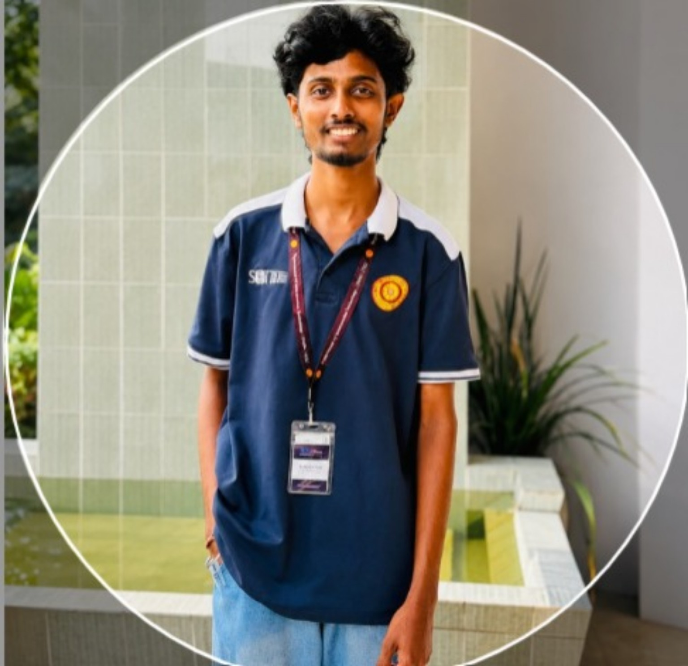

RidePulse
Smart conductor-based digital ticketing & bus intelligence system combining digital ticketing, GPS tracking, passenger crowd prediction and emergency reporting.
Role: Business AnalystCyber Security · DevOps · Data & Business Analytics · ERP Systems

Third-year Business Information Systems undergraduate at the University of Sri Jayewardenepura with hands-on exposure to business analysis, requirements engineering and system modelling through team-based software projects.
Interests include cybersecurity fundamentals, ERP systems, data and business analytics, DevOps concepts and digital transformation, alongside leadership, public speaking and creative content work.
Smart conductor-based digital ticketing & bus intelligence system combining digital ticketing, GPS tracking, passenger crowd prediction and emergency reporting.
Role: Business AnalystBusiness process modelling for an advertising-based boarding platform connecting seekers with advertisers and property owners.
Comparative research evaluating features, deployment models and organizational suitability of two ITSM platforms.
Independent quantitative study exploring university students' perceived risk toward deepfake content.
C# task management application using task logic, data structures and UI design.
C# system developed to strengthen database handling and core programming concepts.
Python · C# · JavaScript · PHP · HTML · CSS
Power BI · RapidMiner · SPSS
MySQL · Microsoft Access · SAP HANA
Azure Cognitive Services · Cyber Security Fundamentals · IP Addressing · BGP Routing
Jira · GitHub · Microsoft Office · DevOps · Agile
Business Analysis · Requirements Analysis · System Modeling · Project Management · Leadership · Public Speaking
University of Sri Jayewardenepura · Department of Information Technology
London City College Virtual, Ampara
Media Director — Thiruvalluvar Students' Association
Quality Assurance Crew Member — CSDS, University of Sri Jayewardenepura
Senior Prefect — Vavuniya Church of Ceylon Tamil Mixed School
Semi-Finalist — TUD 45 Inter-University Tamil Announcing Competition, Allusion '26
1st Runner-Up — Inter-University Tamil Debating Competition, Clash of Minds '26
Scriptwriter & Promotional Content Creator — TSA Club Events